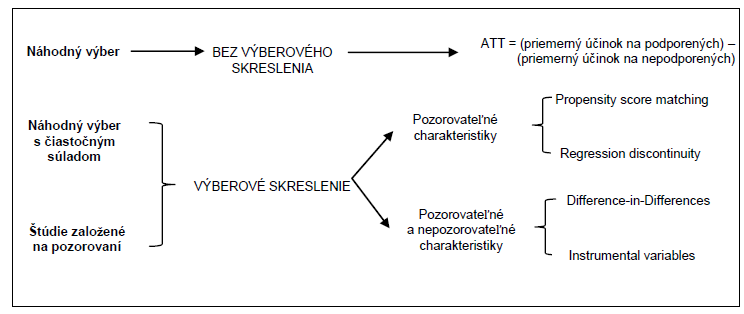
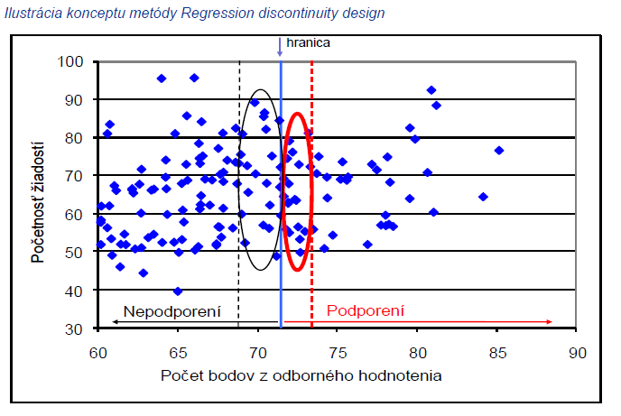

Kapitola 17 Kontrafaktuálne hodnotenie dopadov
Skupiny otázok zaoberajúce sa kvantifikáciou účinkov sa riešia kontrafaktuálnymi metódami. Posudzujú, či daná intervencia vyvolala požadované efekty.
Táto časť popisuje jednotlivé kontrafaktuálne metódy, ktoré eliminujú výberové skreslenie. Patria medzi ne: propensity score matching, regression discontinuity design, či difference-in-differences.
Prvé dve metódy – Propensity score matching a Regression discontinuity design – možno použiť, ak poznáme a máme údaje pre všetky premenné, ktoré majú vplyv na potenciálne výsledky. Tento dodatočný predpoklad je ťažko splniteľný v oblastiach ako vzdelávanie a trh práce, kde nepozorovateľné charakteristiky (ako osobné schopnosti, motivácia a inteligencia) budú s väčšou pravdepodobnosťou vplývať na individuálne správanie. V prípadoch, keď hodnotiteľ predpokladá, že výber do intervencie je ovplyvňovaný tak pozorovateľnými ako aj nepozorovateľnými faktormi/ charakteristikami sú k dispozícii ďalšie metódy, okrem iného napr, Difference-in-differences (rozdiel rozdielov).

17.1 Propensity score matching
Metóda Propensity score matching (PSM) je založená na štatistickej porovnávacej skupine ktorá je vytvorená na základe pravdepodobnosti účasti na podpore (hodnote propensity score) za využitia pozorovateľných charakteristík jednotiek populácie. Podporené jednotky sú následne spárované s nepodporenými na základe hodnôt propensity score. Priemerný účinok podpory sa následne vypočíta ako priemer rozdielov vo výsledkoch naprieč týmito dvomi skupinami. Na párovanie podporených a nepodporených jednotiek na základe propensity score sa využívajú rozličné postupy.
17.1.1 Účel
Vzhľadom na kontroverzný charakter implementácie náhodných (randomizovaných) hodnotení predstavuje tento prístup veľmi presné hodnotenie dopadu. Teda ak intervencia nemôže byť implementovaná náhodne je simulácia náhodného experimentu vhodným riešením. Hodnotiteľ sa pomocou párovacích techník snaží vytvoriť kontrafaktuálnu (kontrolnú) skupinu, ktorá je vzhľadom na pozorovateľné charakteristiky čo najpodobnejšia podporenej skupine. Podstatou je nájsť z čo najväčšej skupiny nezúčastnených jednotiek také jednotky, ktoré sú pozorovateľne podobné podporeným jednotkám v charakteristikách neovplyvnených účasťou v intervencii (tieto môžu zahŕňať pred-intervenčné charakteristiky, keďže tieto s určitosťou nie sú ovplyvnené následnou účasťou v intervencii). Každá podporená jednotka je spárovaná s podobnou nepodporenou jednotkou a priemerný rozdiel vo výsledkoch naprieč týmito dvomi skupinami je účinkom intervencie.
Za predpokladu že rozdiely v účasti sú založené výlučne na pozorovateľných charakteristikách a ak máme k dispozícii dostatočne veľkú skupinu nepodporených jednotiek na spárovanie s podporenými, môžeme odmerať účinok podpory. Pri aplikácii PSM je každá podporená jednotka spárovaná s nepodporenou na základe jej hodnoty propensity score, odrážajúcej pravdepodobnosť podpory podmienenú rozličnými pozorovateľnými charakteristikami \(X\).
Pri aplikácii metódy PSM sa zostrojí štatistická porovnávacia skupina modelovaním pravdepodobnosti účasti v intervencii na základe pozorovateľných charakteristík neovplyvnených intevenciou. Podporení sú následne spárovaní s nepodporenými na základe tejto pravdepodobnosti, tzn. hodnoty propensity score. Priemerný účinok podpory sa vyráta ako rozdiel priemerných hodnôt výsledkov týchto dvoch skupín.
Sama o sebe je metóda PSM užitočná v prípadoch ak sa má za to, že účasť na intervencii určujú iba pozorovateľné charakteristiky. Tento predpoklad závisí od pravidiel cielenia intervencie, ako aj od faktorov vedúcich k prihláseniu sa jednotiek do intervencie (self-selection). V ideálnom prípade, ak sú pre podporené a nepodporené jednotky dostupné dáta z obdobia pred implementáciou intervencie, môžu sa využiť na výpočet hodnôt propensity score a spárovanie týchto dvoch skupín na ich základe.
17.1.2 Podmienky použitia
Kľúčovou podmienkou použiteľnosti porovnávania je dostupnosť charakteristík (premenných) pozorovaných pred intervenciou. Premenné pozorované po intervencii môžu byť ovplyvnené samotnou intervenciou. V ideálnom prípade by všetky premenné, ktoré ovplyvňujú výberový proces, mali byť zahrnuté do zoznamu porovnateľných premenných, aj keď je to zriedka. Ďalšou podmienkou správneho uplatňovania porovnávania je existencia podstatného prekrývania medzi charakteristikami podporených a nepodporených. Z porovnania by mali byť vylúčení tí, ktorí nie sú podporení a majú veľmi nízke skóre alebo podporení s veľmi vysokým skóre.
17.1.3 Hlavné kroky
Na výpočet účinkov intervencie je najprv potrebné vyrátať hodnoty propensity score na základe všetkých pozorovateľných charakteristík, ktoré ovplyvňujú tak účasť v intervencii ako aj očakávaný výsledok. Cieľom párovania je vytvorenie čo možno najpodobnejšej porovnávacej skupiny nezúčastnených jednotiek k skupine podporených jednotiek.
1. Stanovenie hodnoty propensity score
Hodnota propensity score určuje pravdepodobnosť jednotky v cieľovej populácii (podporené a porovnávacie jednotky), že získa podporu (treatment) na základe jej pozorovateľných charakteristík. Ak majú dve jednotky podobnú hodnotu propensity score, znamená to že sú podobné aj v charakteristikách použitých na jej určenie.
2. Kontrola spoločnej oblasti prelínania
Je potrebné zabrániť porovnávaniu neporovnateľného, tzn. že v analýze by sa mala použiť iba podmnožina porovnávacej skupiny ktorá je porovnateľná s podporenou skupinou. Je potrebné skontrolovať výskyt aspoň jednej podporenej a jednej nepodporenej jednotky pre každú z hodnôt propensity score. Existuje viacero metód kontroly avšak najjednoduchšou je vizuálna analýza hustoty rozloženia hodnôt propensity score. Ďalšou možnosťou je porovnanie miním a maxím hodnôt propensity score v podporenej a nepodporenej skupine. Oba prístupy vyžadujú odstránenie všetkých pozorovaní pri ktorých je hodnota propensity score menšia ako minimum alebo väčšia ako maximum v druhej skupine.
3. Voľba algoritmu párovania
Ďalší krok sa pozostáva zo spárovania podporených a nepodporených jednotiek, ktoré majú podobné hodnoty propensity score za použitia vhodného algoritmu párovania. Algoritmy párovania sa líšia v spôsobe merania podobnosti medzi podporenými a nepodporenými jednotkami (tzn. spôsobe akým sa tvoria dvojičky) a tiež v spôsobe prideľovania váh spárovaným jednotkám.
4. Presnosť (kvalita) párovania
Kvalita párovania sa hodnotí na základe jeho schopnosti vyvážiť porovnávaciu a podporenú skupinu s ohľadom na charakteristiky použité pri určení hodnôt propensity score. Existuje viacero spôsobov hodnotenia kvality párovania. Základnou myšlienkou všetkých prístupov je porovnať rozloženie premenných (jednotlivých charakteristík) v oboch skupinách (podporenej a porovnávacej) pred a po párovaní na základe propensity score. V prípade významných rozdielov po párovaní nebolo párovanie na základe hodnôt propensity score úplne úspešné a je potrebné vykonať určité nápravné opatrenia. Dobrá párovacia procedúra by mala znížiť štandardnú odchýlku (skreslenie) pre každú variabilnú premennú (pozorovateľnú charakteristiku) použitú pri určení propensity score. Tento prístup vyžaduje porovnanie štandardných odchýlok pre každú variabilnú premennú pred a po párovaní.
5. Odhad účinkov podpory
Po spárovaní podporených jednotiek s jednotkami kontrolnej skupiny je určenie účinkov podpory relatívne jednoduché – postačuje vyrátať priemernú hodnotu rozdielu medzi výsledkovou premennou v podporenej a nepodporenej skupine.
17.1.4 Silné stránky a obmedzenia
Párovanie má dve jasné nevýhody v porovnaní s experimentálnymi technikami. Prvou je predpoklad podmienenej nezávislosti - to znamená, že výberové skreslenie je eliminované kontrolou premenných. V prípade správneho náhodného výberu si môžeme byť istí, že populácia podporených a nepodporených nie je rovnaká, pokiaľ ide o pozorovateľné aj skryté charakteristiky. Po druhé, zatiaľ čo pri porovnávaní sa dajú odhadnúť účinky intervencie iba v prípade, že dôjde k prekrývaniu medzi populáciou podporených a nepodporených; náhodným priradením sa zabezpečí spoločná (ne)podpora v celej vzorke. Vďaka týmto úvahám sú experimentálne techniky jednoznačne lepšie ako porovnávanie. Pri navrhovaní a výkone hodnotení intervencií sú však dôležité aj praktické úvahy ako často sa dajú experimentálne prístupy použiť.
Hlavnou výhodou porovnávania oproti náhodnému priradeniu je to, že sa vyhýba etickým úvahám, ktoré vznikajú, keď sa náhodne zamietne potenciálne prospešná liečba. Náklady sú tiež dôležitým praktickým aspektom pri vykonávaní hodnotení. V niektorých prípadoch, napriek náročným požiadavkám na porovnávanie údajov, môže byť generovanie údajov menej nákladné ako v prípade experimentu, pretože tento experiment vyžaduje dôkladné monitorovanie náhodného výberu.
17.2 Regression Discontinuity Design (RDD)
Metóda Regression Discontinuity Design (RDD) má viacero prvkov náhodného experimentu a môže byť použitá v prípadoch, kedy náhodný výber podporených a nepodporených nie je možný. Ide o populárnu kvázi-experimentálnu metódu, ktorá je založená na poznaní presných pravidiel na základe ktorých je stanovená oprávnenosť zúčastniť sa intervencie. V súlade s touto metódou je zaradenie uchádzačov do oprávnenej skupiny založené výlučne na pozorovateľných pred-intervenčných premenných a pravdepodobnosť podpory sa nespojito mení ako funkcia týchto premenných. Pre objasnenie tejto myšlienky môžeme uviesť príklad, v ktorom je skupina žiadateľov o podporu rozdelená do dvoch skupín podľa hodnoty zvolenej premennej v pred-intervenčnom období (napr. vek, výška mzdy, počet bodov z odborného hodnotenia). Žiadatelia nachádzajúcim sa nad určitou hranicou sa zúčastňujú na intervencii, zatiaľ čo žiadatelia nachádzajúci sa pod touto hranicou nie sú zapojení. Nespojitosť v rámci RDD môže byť sharp (ostrá) alebo fuzzy („rozmazaná”).

Hlavnou myšlienkou tejto metódy je, že jednotky v cieľovej populácii pod stanovenou hranicou (ktorí neboli podporení) sú vhodnou porovnávacou skupinou k jednotkám nad touto hranicou (ktorí boli podporení). Účinok intervencie je možné určiť porovnaním priemerných výsledkov podporených žiadateľov nachádzajúcich sa tesne nad hranicou oprávnenosti so zamietnutými žiadateľmi nachádzajúcimi sa tesne pod hranicou oprávnenosti. Oblasť v okolí hranice sa dá za určitých podmienok porovnateľnosti označiť takmer ako náhodný experiment.
Z uvedeného vyplýva, že sharp RDD zachytáva účinok intervencie iba na podskupine populácie s hodnotami blízko hranice. V prípade heterogénnych účinkov intervencie sa môže lokálny priemerný účinok podpory značne líšiť od účinkov podpory na jednotky nachádzajúce sa vo väčšej vzdialenosti od hranice. Hoci je tento prístup charakterizovaný vysokou internou validitou, jeho výsledky nemôžu byť vždy generalizované na celú cieľovú populáciu.
17.2.1 Podmienky použitia
Táto metóda musí spĺňať niekoľko podmienok, aby bola úplne použiteľná. V prvom rade musí byť výber určený na základe pozície voči hranici. Príklad administratívnych pravidiel tohto druhu nie je neobvyklý: okrem charakteristík ako sú príjmy domácnosti alebo veľkosť firiem, je možné uvažovať o rebríčkoch, ktoré sledujú napríklad dĺžku (ne)zamestnanosti. Ďalším obmedzením uplatniteľnosti RDD je to, že jednotlivci by nemali mať možnosť manipulovať so svojou pozíciou vzhľadom na hraničnú hodnotu, kvôli tomu aby sa mohli zúčastňovať na intervencii.
17.2.2 Hlavné kroky
1. Stanovenie výberovej premennej a hraničnej hodnoty
Podmienkou aplikácie metódy RDD je existencia spojitej výberovej premennej s hranicou rozdeľujúcou jednotky do podporenej a nepodporenej skupiny.
2. Stanovenie intervalu okolo hranice
Stanovenie oblasti okolo hraničnej hodnoty závisí na hodnotiteľoch a početnosti pozorovaní. Zvyčajne sa aplikuje princíp viacerých intervalov, napr. veľký interval (0% \(< x <\) 50%), stredný interval (10% \(< x <\) 40%) a malý interval (15% \(< x <\) 35%). V tejto súvislosti je potrebné poznamenať, že čím je interval menší, tým viac sú podmienky podobné experimentálnemu postupu. Na druhej strane však platí, že čím je interval menší, tým je menšia aj externá validita výsledkov analýzy, keďže sa porovnáva len časť populácie ktorá sa nachádza v blízkosti danej hranice.
3. Určenie typu nespojitosti (sharp alebo fuzzy)
Pri sharp regression discontinuity je podpora deterministickou funkciou kovariantu. Pri fuzzy regression discontinuity sa využívajú nespojitosti v pravdepodobnosti podpory závislé na kovariante. Nespojitosť je následne použitá ako inštrumentálna premenná.
4. Odhad účinkov
Odhad účinkov sa vykoná využitím regresného modelu. Regresia sa môže vykonať pre všetky zvolené intervaly.
5. Analýza externej validity odhadu účinkov
V prípade heterogénnych účinkov intervencie umožňuje metóda RDD iba identifikáciu priemerného dopadu v oblasti hranice výberu. V reálnej situácii, pri výskyte heterogénnych účinkov naprieč podporenými jednotkami môže byť lokálny účinok podpory značne odlišný od účinku v oblasti vzdialenejšej od hranice výberu. Z tohto dôvodu by sa mali hodnotitelia uistiť, či a za akých podmienok sú výsledky v okolí hranice zovšeobecniteľné na celú populáciu.
17.2.3 Silné stránky a obmedzenia
Tento návrh umožňuje identifikovať kauzálny efekt intervencie bez umelých vylúčení, predpokladov týkajúcich sa výberu, formulárov a pod.. RDD môže byť najlepšou alternatívou k randomizovaným štúdiám na hodnotenie efektívnosti intervencií. Najdôležitejším prvkom návrhu RDD je použitie hraničného skóre pred intervenciou na rozdelenie do skupín (s intervenciou a bez). Výhodou je, že to, na základe čoho sa robí rozdelenie, nemusí byť rovnaké ako výsledný efekt.
Na druhej strane má dizajn dve hlavné obmedzenia. Po prvé, jeho uskutočniteľnosť sa z definície obmedzuje na tie prípady, v ktorých sa výber uskutočňuje na základe premennej pozorovateľnej pred intervenciou. V skutočnosti tomu tak často nie je. Po druhé, aj keď je prístup uskutočniteľný, identifikuje iba priemerný vplyv na hranici. To nám v prítomnosti heterogénnych vplyvov nehovorí nič o vplyve na jednotky mimo hranice. V tomto zmysle identifikujeme iba lokálny dopad intervencie. Na identifikáciu dopadu na širšiu populáciu sa dá použiť iba neexperimentálny odhad.
17.3 Rozdiel rozdielov
Metóda rozdiel rozdielov – Difference-in-Differences (DD – double difference) využíva časové rady údajov na určenie kontrafaktuálnej situácie. Jej aplikácia si vyžaduje údaje pre podporenú aj nepodporenú skupinu a to pre obdobie pred aj po realizácii intervencie. Výsledný efekt vypočíta ako rozdielov výsledkov medzi podporenou a porovnávacou skupinou po určitom čase od ukončenia realizácie intervencie, v porovnaní s ich rozdielom v období pred intervenciou. Účinky sa získajú odpočítaním rozdielu pred intervenciou vo výsledkoch medzi príjemcami a osobami, ktoré nie sú príjemcami pomoci, od rozdielu po zásahu.
17.3.1 Účel
Dopady intervencie sa dajú odhadnúť pomocou výpočtu dvojitého rozdielu, jedného za čas (pred a po) a druhého medzi subjektmi (medzi podporenými a nepodporenými). Táto metóda vo svojej najjednoduchšej podobe vyžaduje iba súhrnné údaje o výslednej premennej. Ak sú k dispozícii údaje za podporených aj nepodporených najmenej počas dvoch časových období, metóda rozdiel rozdielov (DD) vytvára odhad dopadov, ktoré sú v zásade pravdepodobnejšie ako dopady založené na jedinom rozdiele (buď v čase, alebo medzi skupinami).
Najjednoduchší odhad dopadu je rozdielom vo výsledkoch medzi podporenými a nepodporenými, ktorý sa meria po uskutočnení intervencie (napríklad rozdiel v priemernej zamestnanosti medzi podporovanými a nepodporovanými MSP, rok po poskytnutí podpory). Tento rozdiel však nie je dopadom intervencie, pretože podporení majú tendenciu sa líšiť od tých, ktorí nie sú podporení, čo je dôsledkom výberového skreslenia. Teraz predpokladajme, že pred uskutočnením intervencie máme k dispozícii údaje o výslednej premennej pre podporených aj nepodporených. Odčítanie rozdielu pred intervenciou od rozdielu po intervencii eliminuje jeden druh výberového skreslenia súvisiaci s časovo nemennými individuálnymi charakteristikami. Inými slovami, ak sa rozlíšenie medzi podporenými a nepodporenými nemení v čase, odpočítanie rozdielov pred intervenciou odstráni výberové skreslenie a stanoví vierohodný odhad dopadu intervencie.
17.3.2 Podmienky použitia
Použitie metódy DD je podmienené efektom, ktorý sa opakuje v čase. To znamená, že rovnaké merania sa môžu robiť opakovane v čase. Väčšina efektov verejnej politiky sa dá časom replikovať pre tie isté jednotky – napr. tržby alebo zisky firiem, príjmy jednotlivcov alebo spotreba domácností. Niektoré efekty sa prejavia len pre určitú jednotku, napríklad trvanie nezamestnanosti po strate zamestnania alebo hmotnosť detí pri narodení. V týchto prípadoch je lepšie pracovať napr. so skupinami jednotlivcov,, ktorí sa stali nezamestnanými a takto odhadnúť priemernú dobu nezamestnanosti.
Problémom, ktorý sa týka uplatniteľnosti DD dostupnosť údajov. Štatistiky niektoré údaje zberajú na pravidelnej báze. Absencia údajov pred intervenciou môže byť závažnou prekážkou uplatniteľnosti DD. Retrospektívne meranie údajov je veľmi problematické. Uplatniteľnosť tejto metódy si tiež vyžaduje, aby intervencia bola diskrétnej (binárnej) povahy: musí existovať skupina s intervenciou a bez intervencie.
17.3.3 Hlavné kroky
1. Výber premennej
Analýza sa bude realizovať s akoukoľvek relevantnou premennou ku ktorej existujú údaje. Napr. môžeme sledovať ročný prírastok príjmu na obyvateľa.
2. Výber obdobia pred a po intervencii
Výber pred a po intervenčného obdobia závisí od dostupnosti údajov za jednotlivé roky. Neexistuje univerzálne pravidlo na stanovenie presného počtu rokov ktoré je potrebné sledovať pred intervenciou, resp. po jej implementácii. Je potrebné zohľadniť charakter intervencie a dĺžku obdobia jej implementácie.
Pri jednorazových opatreniach, resp. opatreniach nenáročných na implementáciu (napr. nákup technológie, investícia do produkčných zariadení) je postačujúce sledovať obdobie dvoch alebo troch rokov pred realizáciou intervencie a obdobie po intervencii, kedy sa dá logicky predpokladať že jej účinky sa už stihli prejaviť. Pri intervenciách majúcich za cieľ zmeny menej hmatateľných oblastí (ako napr. zvýšenie životnej úrovne, sociálneho a ekonomického postavenia, rodovej rovnosti, alebo zlepšenie životného prostredia) je potrebné počítať s dlhšími obdobiami počas ktorých sa bude pôsobenie intervencie sledovať a vyhodnocovať.
3. Odhad účinkov podpory
Priemerný účinok podpory na podporených sa zvyčajne odhaduje prostredníctvom regresnej analýzy. Základná analýza je jednoducho záležitosťou výpočtu priemerov pre dve skupiny v dvoch časových obdobiach 17.1.
| Obce | zmena v príjme na osobu (%) | Rozdiel medzi obdobiami | |
|---|---|---|---|
| 1990 - 95 | 1995 - 99 | ||
| s intervenciou | 2,35 | 4,45 | 2,10 |
| bez intervencie | 2,28 | 5,08 | 2,80 |
| rozdiel medzi skupinami | 0,07 | -0,63 | -0,70 |
Z tabuľky 17.1 je evidentné, že v období rokov 1995 až 1999 boli obce, ktoré dostali podporu, podstatne menej úspešné v porovnaní s obcami, ktoré nedostali podporu (o 0,7 % bodu bol nárast príjmu na osobu menší).
17.3.4 Silné stránky a obmedzenia
Napriek svojej širokej uplatniteľnosti nie je metóda DD univerzálnou. Jej pozitívnou stránkou je, že nevyžaduje zložité údaje, ale len súhrnné údaje o výsledných efektoch politiky zozbierané pred a po intervencii. Uplatnenie v praxi prináša niekedy určité obmedzenia.